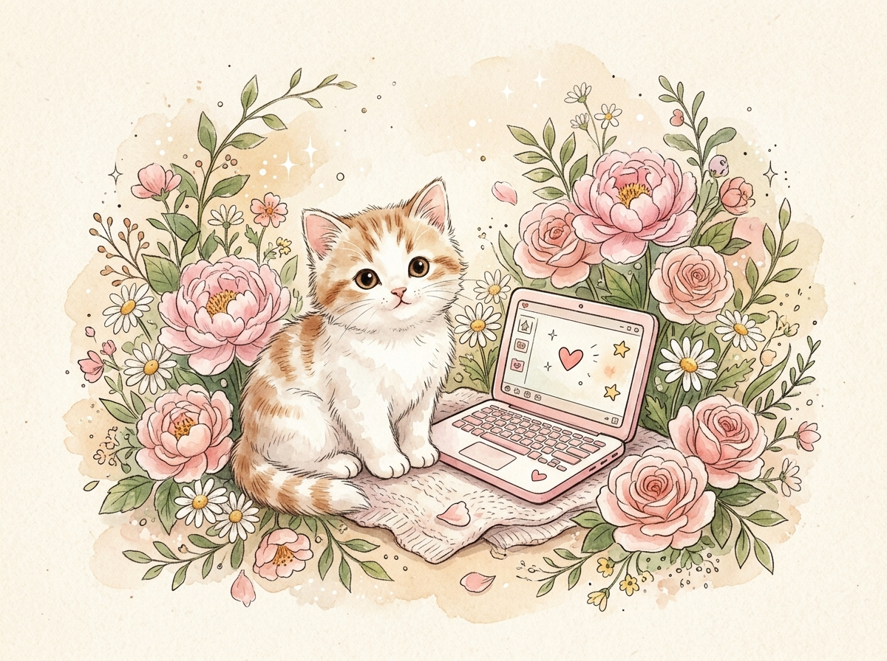
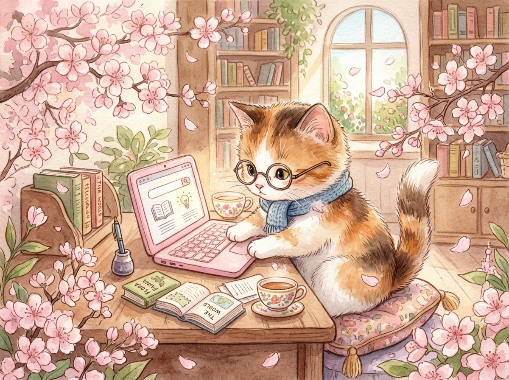
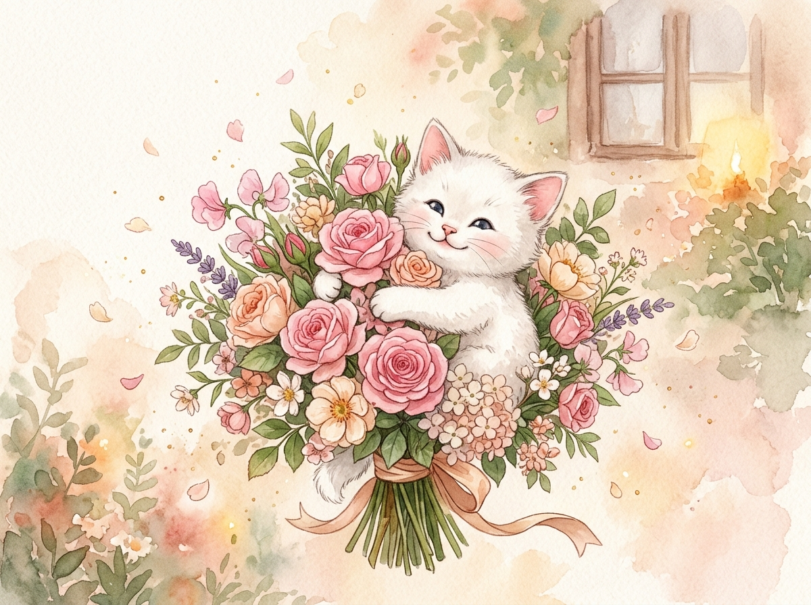

Project: 404 — Missing Piece Found
🌸
Hello, little human! 🐱
I have a very important scientific discovery to share with you.

$ starting_deep_research.exe
Searching for missing code...
Analyzing possible bugs...
Running experiments...
Research status: Almost complete.
Scientific Debugging Humor
🐾
The Cat Meme Corner 🐱
Behind every complex codebase is a kitten wondering why line 14 refuses to run.
Investigation Phase · Complete
After extensive research...

"I've been doing deep research to find the missing piece of my code..."
"And I think I finally found it."
CLICK TO CONNECT
Searching socket #404...
Tap the puzzle piece to snap it in!
A Gentle Message
🌸

Maybe some things don't need complicated algorithms.
Sometimes, all you need is a little kindness and good intentions.
اللهم اجعل بيننا خيرًا، وارزقنا حسن النية، وطيب الكلام، وجميل الأثر.
وأسأل الله أن يكتب لنا الخير أينما كان.
$ research.exe
Missing piece: FOUND
Intentions: Pure
Bugs: Still debugging
Flowers: 100%
Cats: Unlimited 🐱
Status: Hoping for good things.